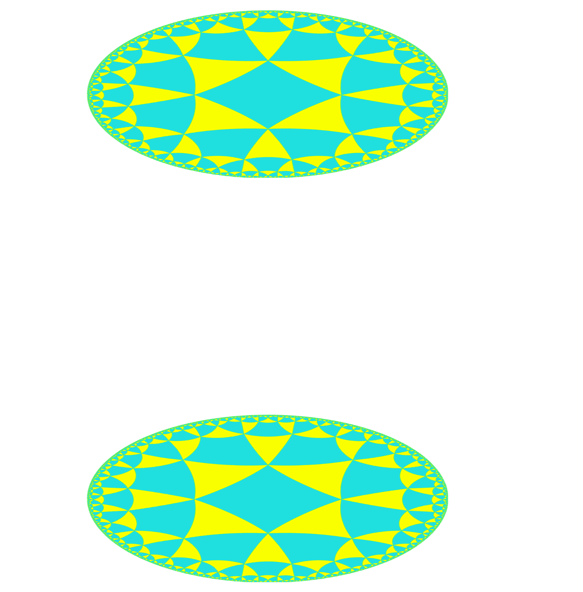

Research
Overview
- I study strongly coupled quantum field theories (QFTs) — the framework that combines quantum mechanics with special relativity and describes particles as excitations of underlying fields.
- My main focus is on conformal field theories (CFTs) — highly symmetric models that often govern physics at long distances or at critical points of phase transitions.
- I use the AdS2/CFT1 correspondence as a “two-way bridge” between QFTs in a curved two-dimensional spacetime (AdS2) and conformal field theories living on the one-dimensional boundary of AdS2.
- My toolkit combines modern bootstrap methods with classic QFT techniques such as perturbation theory, scattering theory, and Hamiltonian truncation.
- I am also interested in conformal defects, and in computational approaches to strong interactions such as lattice gauge theory and tensor networks.
PhD Research
My research is in quantum field theory (QFT) — the framework that unites quantum mechanics with special relativity. In this picture, particles are really “ripples” or excitations of underlying fields. QFT is the language of particle physics, describing the fundamental forces of nature, but it also appears in condensed matter topics such as superconductivity and magnetism.
One guiding principle here is the renormalization group (RG). At heart, it’s a way of tracking how a theory changes when you look at it at different energy scales — zooming in or zooming out. The idea is that many theories that look different at high energies (the ultraviolet, or UV) can look the same at low energies (the infrared, or IR). The long-distance theory that emerges in the IR is called an IR fixed point. In many cases of physical interest, these fixed points are conformal field theories (CFTs) — special QFTs that look the same at all scales, formally invariant under transformations that preserve local angles.

A central challenge in QFT is to understand strongly coupled theories — situations where interactions are so strong that we can’t treat them as small corrections to a simpler model. This isn’t exotic: the strong nuclear force that binds protons and neutrons at low energies is strongly coupled, and so are many condensed matter systems. Since CFTs are often special waypoints in this “theory space,” and are more constrained mathematically than generic QFTs, they provide natural starting points for studying strong coupling. Beyond being theoretically appealing, CFTs have wide applications: they describe critical points in phase transitions, the worldsheet in string theory, and even provide the foundation for the holographic principle, which I turn to next.
A holographic principle: AdS2/CFT1
The most famous version of holography is the AdS/CFT correspondence. Here AdS stands for anti–de Sitter spacetime — a maximally symmetric spacetime with constant negative curvature. One way to picture it is as a kind of “infinite cylinder,” where the boundary represents space and time at infinity, with the cylinder’s height marking the direction of time. Physically, it’s the geometry of a universe with a uniform negative vacuum energy and devoid of matter or radiation.
The correspondence proposes that certain CFTs living on this boundary are equivalent to QFTs with gravity turned on in the bulk of AdS. In other words, the same physics can be described either as a quantum field theory on the boundary or as a bulk QFT with dynamical gravity. This is why it’s called “holographic”: the higher-dimensional bulk physics is fully captured by the lower-dimensional boundary theory, just as a hologram encodes a 3D image on a 2D surface. Most strikingly, this duality links two notoriously hard problems — strongly coupled QFT and quantum gravity.
{kind=link}

While AdS/CFT is usually discussed in higher dimensions, those cases are technically demanding: the dual CFTs are often poorly understood, and non-perturbative tools are scarce. By contrast, low-dimensional cases (like 1D or 2D CFTs) are simpler, both numerically and analytically. In my work, I focus on the simplest nontrivial setting: the AdS2/CFT1 correspondence. This case is ideal for modern methods such as the analytic functional bootstrap developed by my group, as well as classic tools like Hamiltonian truncation.
Tools and goals
The AdS/CFT correspondence gives us two complementary perspectives:
- On the bulk side (inside AdS2): I can use standard QFT methods like perturbation theory, scattering theory (S-matrix methods), and Hamiltonian truncation (numerically approximating the theory by cutting it down to a finite set of states).
- On the boundary side (the CFT1): I can apply QFT ideas as well, but I also gain access to the conformal bootstrap — a powerful non-perturbative method that uses symmetry and consistency to carve out the space of allowed fixed points.
These two viewpoints complement each other. The bootstrap constrains what kinds of conformal theories are possible, while bulk QFT methods show how theories evolve under deformations. My aim is to use this “two-way bridge” to understand how strongly coupled bulk dynamics are encoded in boundary CFT data, and conversely, how the CFT’s structure reflects the physics of the bulk.
In short: I want to revisit classic quantum field theory problems with modern tools, and to interpret the mathematical structures of bootstrap and holography in physical terms.
Parallel interests
Conformal defects
Another area I’ve worked on is conformal defects — the topic of my first paper. In general, a defect is a lower-dimensional feature (a line, surface, or submanifold) that modifies a QFT. For example, in a lattice spin system at criticality (described by a CFT), one could add a defect by applying a magnetic field along just a line of spins. This breaks some symmetry but may preserve conformal symmetry along the defect. Such setups are called defect conformal field theories (dCFTs).
From the RG perspective, introducing a defect means perturbing a theory in the UV with a localized operator, then following the flow to a new IR fixed point. This makes defects natural probes of theory space: they not only enlarge the family of CFTs but also provide controlled routes to new universality classes.
Physically, defects show up in many areas — from branes in string theory, to Wilson lines in gauge theory, to impurities in condensed matter systems. They thus unify phenomena across very different domains.
Lattice gauge theory and tensor networks
Before working on CFTs, I had some experience with lattice gauge theory — the standard non-perturbative approach to QCD at low energies, where the strong force is genuinely strongly coupled. In lattice gauge theory, spacetime is discretized: quarks sit on lattice sites, gluons live on the links, and observables are computed using Monte Carlo simulations. This has been hugely successful, but the computational cost grows rapidly with system size and dimension, limiting its reach.
A promising alternative comes from tensor networks — compressed representations of quantum states that have become commonplace in the condensed matter community. Instead of storing exponentially many numbers, tensor networks capture only the essential structure. Many lattice observables can be rephrased in this language, making it possible to apply efficient algorithms from the many-body world to gauge theory problems. This remains an active line of research, with the hope of eventually pushing beyond the current computational frontier of lattice QCD.